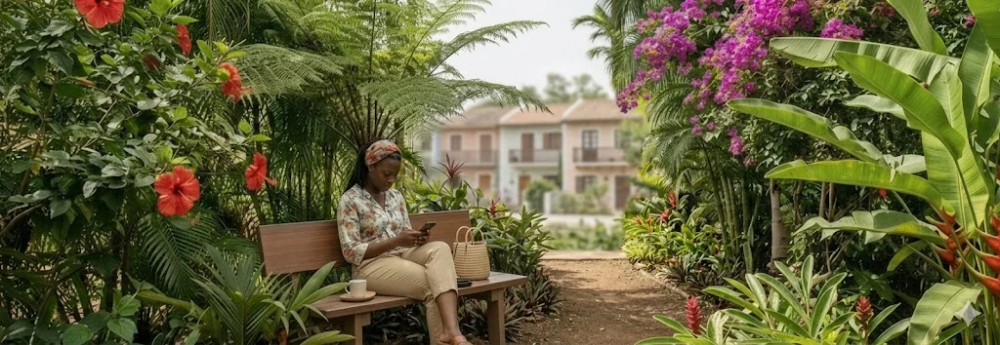

Le Compagnon : physique et numérique
Le Village est complété par un dispositif de continuité de parcours, le « Compagnon S'AIDER+ » — point d'entrée unique, référent de proximité, application mobile.
Simplifier, orienter, coordonner
Le Compagnon accompagne les démarches administratives, les rendez-vous socio-médicaux et l'accès aux services du Village.
On fait le diagnostic, on met en place le parcours de l'utilisateur. Le Compagnon ne remplace aucun acteur et renforce les interactions existantes.
- Un point d'entrée unique pour toutes les formalités
- Une orientation facilitée
- Un suivi du parcours aidant-aidé
- Une coordination renforcée entre acteurs
- Une réduction du non-recours
- Une simplification administrative

Trois piliers fonctionnels

Accompagnement
Suivi personnalisé du parcours aidant-aidé, centralisation des informations, rappels et coordination avec les professionnels du territoire.
Service
Accès direct aux services du Village — hydrothérapie, prévention, répit, activités — et aux ressources partenaires du territoire.
Formation aidants
Parcours de formation en ligne et en présentiel pour renforcer les compétences des aidants familiaux et salariés aidants.